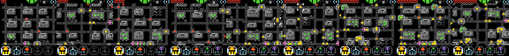

The best of, after a lot of playing.
A game producer, a pile of coding agents, and the games that survived being played by people.


A producer, not a programmer
I’m a video game producer. I’ve produced games at a AAA studio that will stay nameless, and I learned to write code in the ’80s because I wanted to make games. I’m still not a great programmer. I don’t need to be. What I know is what makes a game work, what makes it confusing, and when it’s done.
These are the best of
I looked at the other synthetic game sets out there. They’re nice, and they’re procedurally generated, obviously. Not one of them had human plays, and I’d bet not one was fun. Nobody had iterated on them. Somebody pointed a machine at the problem and shipped what came out.
These are different. Every game here is the result of real human iteration, mostly mine. Someone played a version, said what was wrong, the agents fixed it, and someone played it again. LT03 went through eight versions. I’m proud of them.

Nobody lost their job
The games industry is at a turning point with AI in production and AI art, and I know a lot of people are scared. So, plainly: no artists lost their jobs here. No programmers lost theirs. Nobody did. All that happened is that I got to iterate much faster.
Iteration speed is what game development comes down to. Historically you either had a cracked solo developer from the early days, or a big corporate studio with the people and the time. These tools gave me the speed of the first with the discipline of the second.
They laughed
A year and a half ago, when these coding tools were taking off, software engineers laughed at them, and a lot of them laughed at me for using them. What could a video game producer, a project manager, possibly know about building anything?
It turns out quite a bit. The agents write the code. They don’t notice that a game is dull, or confusing, or has nothing new in it. That takes someone who has spent a career shipping games. Running a pipeline of AI tools well is a producer’s skill.
What slop is, and why most of ours was
Dr. Tim Scarfe of Machine Learning Street Talk has a clean way to say what slop is: something that looks new but doesn’t respect the constraints of its domain. ARC-AGI-3 has constraints. A game has to be easy for a person and hard for an AI. The public 25 also had to be at least reasonably fun, and a person had to be able to figure each one out.
A lot of the synthetic sets I saw would probably be easier for an AI than for a person. That breaks the first rule of the domain, and it’s why they’re slop. We were no different. We made more than thirteen hundred games for the player, and about ninety-five out of every hundred were slop by that test. Only the ones people played, fixed and kept are here. The careful version is Why Creativity Cannot Be Interpolated, by Dr. Jeremy Budd and Dr. Scarfe.
If you’re coming from ARC-AGI-3
ARC calls its 25 public games intentionally easier, and says they don’t fully cover the mechanics of the private set (its own paper, section 3.6). Beating all 25 is the tutorial level. These games are built to be hard for an AI in ways a person finds easy, and people have played and reworked every one.
Not all of them are mine. Some came from Son and Ronen, and some of Son’s came out of his own head. Some started as GPT and Claude output that people then played and reworked. I can’t promise any idea is new. I can promise people played them and kept sending them back until they worked.